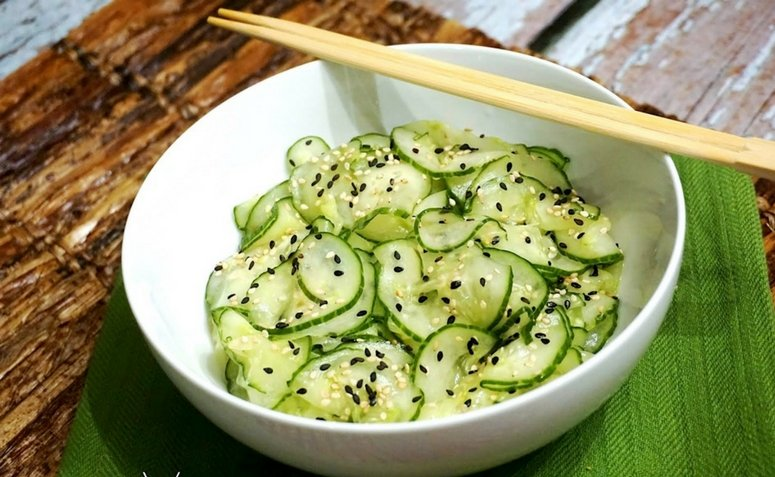

SUNOMONO
Salada de pepino agridoce

Ingredientes
- 3 pepinos japoneses médios fatiados com casca
- 1/2 colher (chá) de sal
- 3/4 de xícara (chá) de vinagre branco
- 5 colheres (sopa) de açúcar
- Gergelim torrado a gosto para salpicar
Modo de preparo
- Misture as fatias de pepino com o sal e deixe escorrer em uma peneira por 30 minutos.
- Leve o vinagre com o açúcar ao fogo baixo, mexendo sempre, até dissolver (uns 2 minutos). Deixe esfriar.
- Misture os ingredientes em uma tigela e leve para gelar por 2 horas.
- Na hora de servir, salpique gergelim a gosto.
Voltar